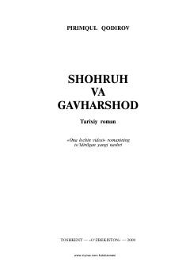

SVTemuriylar sulolasi hamda Shohruh Mirzo va Gavharshod begim hayotiga bag'ishlangan tarixiy roman.
Pirimqul Qodirovning ushbu tarixiy romanida Sohibqiron Amir Temurning o'g'li Shohruh Mirzo va uning oqila rafiqasi Gavharshod begimning hayot yo'li yoritiladi. Asarda Temuriylar saltanatini parchalanib ketishdan saqlab qolgan fidoyi shaxslar hamda Ulug'bek Mirzo va Alisher Navoiy kabi buyuk siymolar faoliyati ham qamrab olingan.